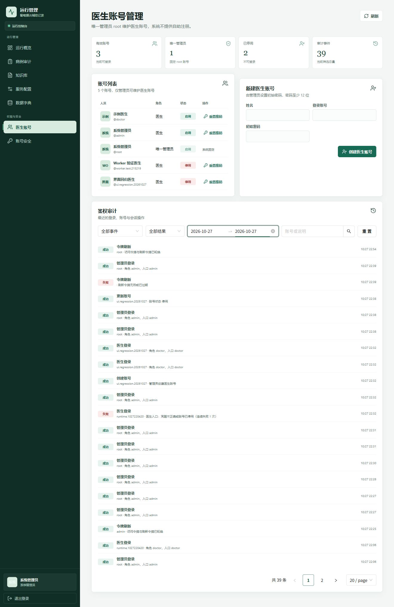

审计列表用于登录、令牌轮换、账号维护和会话操作追踪。数据量增长后，固定拉取最近若干条会隐藏更早的安全事件，因此筛选和分页必须在后端完成。
接口契约
GET /api/v1/admin/audit-events 仅允许具有 audit:read 权限的管理员访问。
{
"items": [AuthAuditEventRead],
"total": 65,
"page": 1,
"page_size": 20
}| 参数 | 说明 |
|---|---|
page | 从 1 开始的当前页。 |
page_size | 每页 1 至 100 条，界面使用 20、40、80。 |
event | 登录、管理员登录、令牌刷新、账号维护等事件类型。 |
outcome | success、failed 或 blocked。 |
from、to | 创建时间范围，格式为 YYYY-MM-DD，结束日期包含当天。 |
search | 按登录账号或事件说明模糊匹配，最多 100 字符。 |
查询与排序
- 先应用所有筛选条件，再计算
total，避免前端对截断数据切片。 - 按创建时间倒序；同一时间下再按自增主键倒序，保证分页顺序稳定。
- 日期参数非法或开始日期晚于结束日期时返回 422。
- 关键词只匹配账号和说明，不检索客户端地址、浏览器信息或详情正文以外的字段。
验证记录
- 后端接口测试覆盖分页对象、事件、结果、关键词、当天范围和非法日期。
- 真实 PostgreSQL 契约测试覆盖先筛选后分页、事件总量、结果筛选和日期边界。
- 浏览器回归：初始 65 条、共 4 页；管理员登录筛选 37 条；管理员登录与失败组合为 0 并显示空状态；重置恢复 65 条；第二页正常；单日筛选为 39 条。
- 新浏览器标签页控制台无错误或警告。

后续工作
下一阶段可增加按账号精确过滤和审计导出，但导出的敏感字段必须受管理员权限控制并记录导出动作。主体逐条浏览仍以服务端分页为准，不引入前端全量缓存。